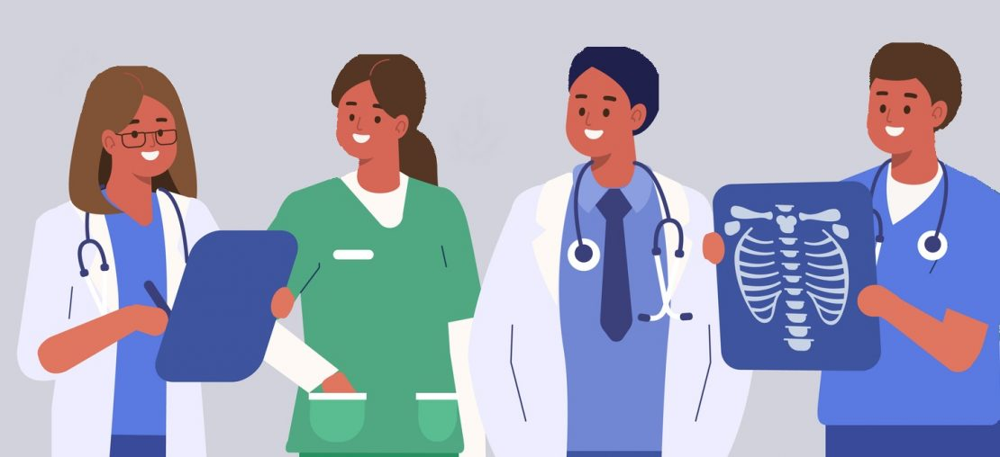

Ideia
A ideia surgiu de uma necessidade de universitário de odontologia em administrar melhor os horários de seus pacientes, seu material e remédios, sendo assim percebida uma oportunidade de melhoria e otimização na administração de consultórios ou clínicas. A ideia inicial era apenas uma aplicação que gerenciasse os horários dos pacientes, porém com o tempo, novas ideias foram surgindo, algumas já foram implementadas e outros ainda serão implementadas no futuro.
Objetivos
Um dos maiores objetivos da HealthArch é melhorar o atendimento a pacientes na área de saúde em geral, aproximando o paciente e o profissional, tornando assim uma área mais humana. Também temos o objetivo de atingir a sociedade em um contexto nacional, e no futuro continental e global, também temos o objetivo de auxiliar os profissionais em sua formação, tanto em cursos técnicos, quanto em cursos de nível superior, para que o formando possa ter mais facilidade em sua formação.
Metas
A principal meta da HealthArch é tornar a área da saúde uma área tecnológica e automatizada com uma aplicação que auxilie os profissionais da saúde, temos a meta de aumentar nosso número de usuários, primeiramente no estado do Paraná e em seguida ampliar o nosso atendimento a região sul e em seguida alcançar o âmbito nacional. Pretendemos também montar uma boa equipe de desenvolvimento, com Design, Marketing, Front-end e Back-end bem estabelecidos, para que possamos trabalhar em melhorias e desevolver de forma cada vez melhor e mais eficiente nossa apicação.
Àrea de atuação
Nossa área de atuação é a saúde em geral, consultórios e clínicas, podendo atender médicos de qualquer área ou especialização, fisioterapeutas, dentistas, nutricionistas, psicólogos, etc. E também estaremos disponibilizando o acesso a recepcionistas, para que possam organizar e fazer o manejo dos horários dos pacientes, agendamento de exames e receitas passadas pelos profissionais, também tendo acesso ao cadastro do cliente, endereço, contato, e informações pessoais.
Compromissos
Nosso principal compromisso é de trazer uma melhor qualidade de vida, por meio da saúde, facilitanto a administração de consultórios e clinicas, e também auxiliando os profissionais durante sua formação, para que possamos no futuro ter profissionais que estejam mais ligados a tecnologia e inovação, podendo assim utiliza-los no desenvolvimento de sua profissão e carreira.